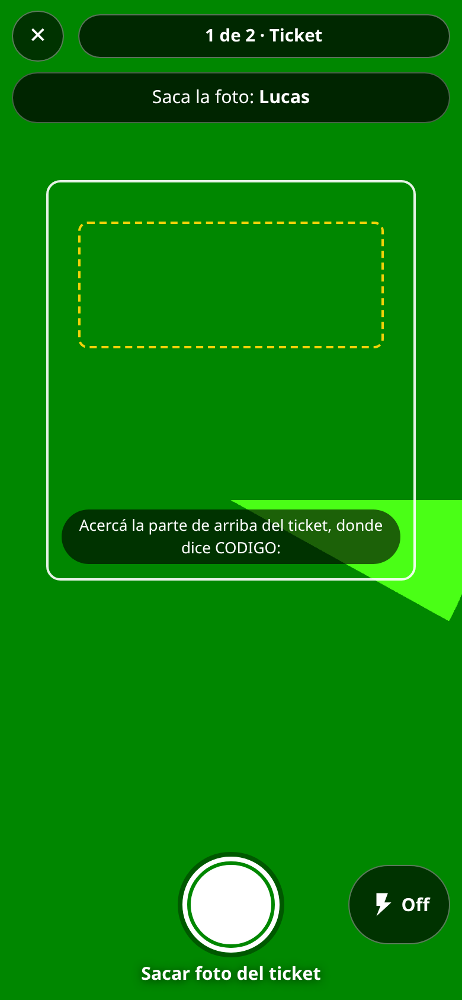
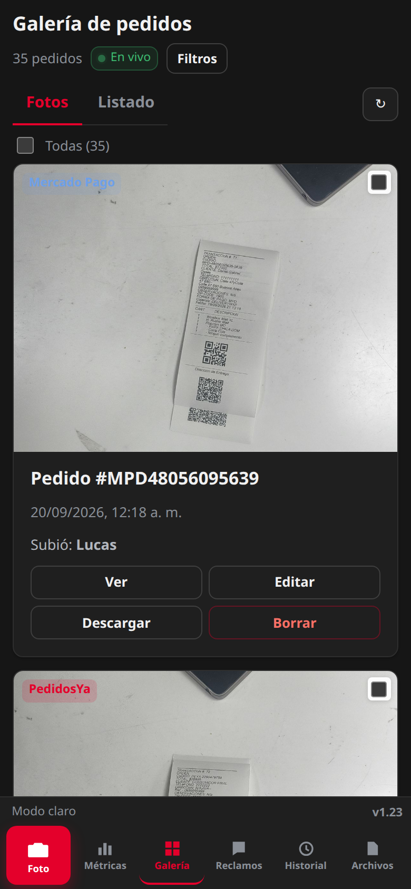
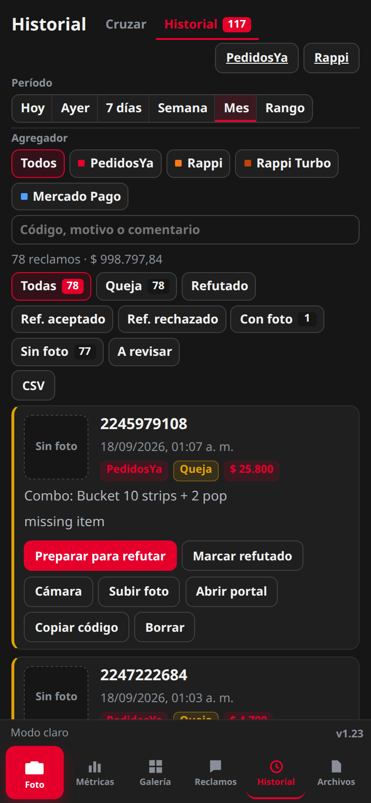

La app del local para dejar evidencia de cada pedido, leer el código solo y defender los reclamos de PedidosYa, Rappi, Rappi Turbo y Mercado Pago.
Dos fotos en el mostrador: ticket y bolsa. El código no se tipea.
Cada reclamo se cruza con la foto y se prepara para refutar en un toque.
Tablero de pedidos, quejas, AWT y plata en disputa, recuperada o perdida.
Ya está en uso en La Plata. El mismo flujo se puede abrir en cualquier local.
delivery.star-app.com.ar · versión 1.23En operación en el local
Por qué existe
Menos fricción en el turno. Más plata que se puede recuperar.
Hoy el agregador descuenta el reclamo si el local no tiene evidencia a tiempo. La app cierra ese hueco.
857pedidos · semana en curso$ 63.096en quejas esta semana · aún sin recuperar$ 998.798en reclamos del mes · historial del local5,13%AWT vs objetivo 11%
Operación
El mostrador no se frena
El chico saca dos fotos y sigue. La lectura corre atrás.
Si cierran o actualizan la app, la cola se termina igual.
Queda quién sacó la foto. No hay planillas ni códigos mal copiados.
A las 13:30 el listado de quejas se cruza solo, en todos los dispositivos.
Economía
Cada foto es una chance de no perder el descuento
Sin foto, el reclamo se paga. Con foto, se puede refutar.
Un toque descarga la evidencia, copia el código y abre el portal.
Se ve la plata en disputa, la recuperada (Ref. aceptado) y la perdida.
% de quejas y AWT contra objetivo, por agregador y por período.
Flujo
Cinco pasos. De la bolsa al tablero.
No hay un sistema paralelo. Es el mismo recorrido todos los días, en el celular o en la PC.
01 · Captura
Ticket
El recuadro pide el renglón de CODIGO. Flash si hace falta. Nombre de quien saca la foto.
02 · Captura
Evidencia
Bolsa, contenido y ticket a la vista. Esa foto es la defensa si llega el reclamo.
03 · Lectura
Código solo
OCR en segundo plano: PEYA, RAPPI, RAPPITURBO, MPD. Si el celular se cierra, sigue al volver.
04 · Reclamos
Cruce
Se pega o se lee el Sheet. Cada queja se une a la foto. Queda en el historial.
05 · Plata
Refutar y medir
Preparar para refutar. Estados Queja → Refutado → Aceptado o Rechazado. El tablero muestra el resultado.
Mostrador
Pensada para el celular, en el momento de armar el pedido.

Quién saca la foto primero. Queda registrado en cada pedido.
Sacar foto grande y centrado. Cámara en dos pasos: ticket y evidencia, sin cerrarse entre pedidos.
Flash abajo, fácil de tocar. Guía para encuadrar el código.
Cola de subida: pueden seguir armando. Si cierran la app, los pedidos en cola se terminan de leer.
También se puede elegir de la galería o cargar un archivo (remito, Excel) desde la PC.
Lectura automática
El código se lee del ticket. Nadie lo copia a mano.
Menos error, menos “código no encontrado”, y el archivo ya nace con el número de pedido.
PedidosYa
CODIGO: PEYA-2286878556
Pedido #PEYA-2286878556
Rappi
CODIGO: RAPPI-480403041
Pedido #RAPPI-480403041
Evidencia
Bolsa, producto y ticket
Si el ticket no se lee, la foto se guarda igual
Galería
Cada pedido queda identificado y a un toque.
PedidosYa, Rappi, Rappi Turbo y Mercado Pago · En vivo · ver, editar, descargarDesde la galería se puede marcar un pedido como reclamo
Reclamos
Del listado del agregador a “Preparar para refutar”.
Importar el Sheet o pegar celdas (código, hora, monto, combo, motivo).
Cruzar con las fotos. A las 13:30 se hace solo, una vez, para todos los celulares del local.
Historial: Queja, Refutado, Ref. aceptado o Ref. rechazado. Filtro por día, agregador y estado.
Preparar para refutar: descarga la foto, copia el código y abre PedidosYa Portal o Rappi Partners.
Si el pedido se marcó como reclamo desde la galería, ya entra al historial aunque todavía falten los datos del Sheet.
Mes en curso · 78 reclamos · $ 998.798 en el historialSin foto = plata que hoy no se puede defender
Gerencia
Métricas: operación y montos, por agregador.
2,45%quejas · objetivo 2,40%5,13%AWT · objetivo 11%21quejas en la semana$ 0recuperado · oportunidad de refutar
Hoy, Ayer, 7 días, Semana, Mes o rango · corte por agregador · informe para exportar o imprimirPedidos y AWT se cargan por día · la plata sale de cada queja
Red de locales
De La Plata a todos los locales, sin un sistema nuevo.
Qué hay que hacer
El mismo link, el mismo flujo
Se abre delivery.star-app.com.ar en el celular del local y se instala en el inicio. No hay usuarios ni contraseñas.
El equipo saca las mismas dos fotos. No hay capacitación extra ni otro software.
El Sheet de reclamos ya trae la columna de local: el cruce y el historial siguen el mismo método.
Un local nuevo puede empezar el mismo día: ícono en el teléfono y cámara.
Qué gana la empresa
Un estándar, no una isla
Misma evidencia, mismos estados, mismas métricas en cada punto de venta.
La plata en disputa se ve. La recuperada también. Se puede comparar local contra local.
Menos pedidos “sin foto” en la red = menos descuentos que se dan por no poder refutar.
No se paga una app distinta por sucursal. Se replica lo que ya funciona en La Plata.


Siguiente paso
Ya está en la calle. El siguiente local es instalarla.
La Plata ya registra pedidos, lee códigos, cruza reclamos y mide quejas y AWT. Expandirlo es copiar ese hábito, no armar otro proyecto.
App web: celular y escritorio 16:9. Se instala como aplicación.
Cuatro agregadores. Cámara, galería, reclamos, historial, métricas y archivos.
Pedido con foto = chance de recuperar el descuento. Pedido sin foto = se paga.